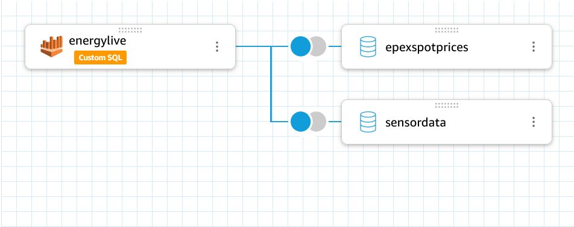
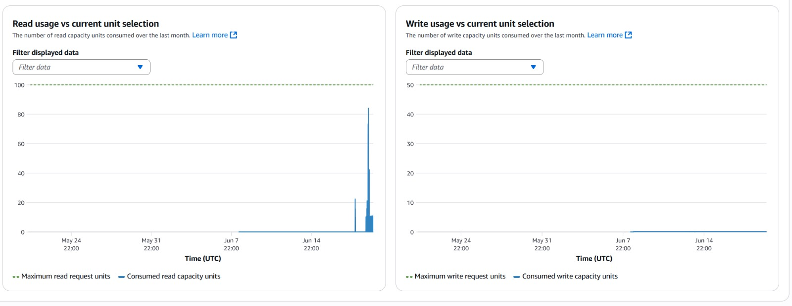

Entwicklung eines Dashboards zur Überwachung des Energieverbrauchs
für On-Premises-Server von KMU
Positionspapier & Experimentelles Artefakt
Agenda
Einführung
Einführung: Energie-Management für KMU
Stand der Forschung
Forschungsstand & Lücken
Use Case
Praxisbeispiel & Nutzen
Implementierung
Verwendete Komponenten zur Energieerfassung
energyLIVE
Smart Meter Anbindung
APIs
Eingesetzte APIs
Hindernisse
Praktische Herausforderungen im Projekt
Messszenarien
Reproduzierbare Lastszenarien & Testaufbau
Demo
Präsentation des Dashboards
Architektur
Systemarchitektur
Fazit
Zusammenfassung & Ausblick
⚡ Einführung: Energie-Management für KMU
Herausforderungen & Zielsetzung
Forschungslücke: Es existiert keine integrierte, praxisnahe Lösung, die Energieverbrauch, Smart-Meter-Daten und Echtzeit-Strompreise für KMU in einem Dashboard vereint.
Intransparenter
Energieverbrauch
Energieverbrauch
Fehlende
Marktpreise
Marktpreise
Ungenutztes
Potenzial
Potenzial
Problem: Klassische Monitoring-Lösungen sind für KMU oft zu komplex oder teuer – es fehlt ein zentrales Dashboard für Server-Energie und Marktpreise.
📚 Stand der Forschung
Forschungsstand & Lücken
| Forschungsdomäne | Beschreibung und Limitation | |
|---|---|---|
| Energiemessung auf Prozessebene | Tools wie "Wattmeter" ordnen Energie einzelnen Prozessen zu, aber ohne Integration von Echtzeit-Strompreisen. | |
| Management von Rechenzentren | ML-Modelle für Lastensteuerung existieren, sind aber meist auf große Cloud-Umgebungen statt auf KMU-Server ausgelegt. | |
| IoT & Gebäudeleitsysteme | Frameworks für Smart Buildings, jedoch ohne den spezifischen Fokus auf granulare Server-Workloads. | |
| Richtlinien & Grundlagen | IEA-Leitfäden und EU-Fallstudien bieten den Rahmen, aber keine direkt implementierbaren technischen Lösungen. |
Gap-Analyse: Trotz Fortschritten fehlt eine Lösung, die Energiemessung pro Prozess, Smart-Meter-Daten, Echtzeit-Strompreise und ein einheitliches Dashboard für KMU-Server kombiniert.
Quellen (Auszug):
- Qiao et al. (2023): Wattmeter: A Tool for Process-Level Energy Attribution
- Chen et al. (2022): Cost-Aware Demand-Response in Data Centers
- Gholami et al. (2020): Smart Building Energy Management Systems
- Siano (2014): Foundational Concepts for Demand-Response Programs
🗂️ Use Case: Echtzeit-Energieoptimierung
Praxisbeispiel & Methodik
Methodik: Kombination von Smart-Meter-Verbrauchsdaten, granularen Server-Messungen (via IoT-Steckdose) und Echtzeit-Strompreisen in einer zentralen Cloud-Plattform zur Schaffung handlungsrelevanter Einblicke.
Smart Meter Daten
Erfassung des Gesamtverbrauchs der Anlage über die Energylive API.
Server-Einzelverbrauch
Granulare Messung des Server-Verbrauchs mittels smarter IoT-Steckdose.
Echtzeit-Strompreise
Integration von Marktpreisen (EPEX Spot) zur Kosten-Nutzen-Analyse.
Ziel: Einem KMU ermöglichen, rechenintensive Aufgaben (z.B. Backups, Analysen) gezielt in Zeiten niedriger Strompreise zu verlagern, um Betriebskosten zu senken, ohne die operationelle Leistung zu beeinträchtigen.
Angestrebter Nutzen:
- Volle Transparenz über den Energieverbrauch von Servern
- Signifikante Kostenoptimierung durch Lastverschiebung
- Verbesserte Nachhaltigkeitsbewertung des IT-Betriebs
🔌 Verwendete Komponenten zur Energieerfassung
Implementierung & Messaufbau
Experimentelles Artefakt: Architektur und Messaufbau sind dokumentiert und für akademische Replikation ausgelegt.

Nous A5T Tasmota
• Art der drahtlosen Übertragung: 2,4 GHz
• Protokoll: IEEE 802.11b/g/n
• MQTT Protokoll
• Firmware-Anpassung: tasmota.github.io notwendig für IoT-Anbindung
• Art der drahtlosen Übertragung: 2,4 GHz
• Protokoll: IEEE 802.11b/g/n
• MQTT Protokoll
• Firmware-Anpassung: tasmota.github.io notwendig für IoT-Anbindung

HPE ProLiant DL380 Gen9 2U
• Mailserver
• DNS Server
• Fileshare
• Proxmox für VMs
• Mailserver
• DNS Server
• Fileshare
• Proxmox für VMs
📡 energyLIVE – Smart Meter Anbindung
Anschluss & Übertragung
Messszenarien: CPU-Stress, I/O-Stress, Reboot, Wartung, Idle – alle Szenarien sind dokumentiert und im Dashboard visualisiert.

Anschlussmöglichkeiten am Smart Meter:
• Optische Schnittstelle
• MBus Kabel
• P1 Kabel (Kabellänge jeweils 1 m)
Netzwerkverbindung:
• WiFi 2,4 GHz
• LoRa P2P 868 MHz
Sendet Verbrauchswerte:
• Alle 10 Sekunden
• Optische Schnittstelle
• MBus Kabel
• P1 Kabel (Kabellänge jeweils 1 m)
Netzwerkverbindung:
• WiFi 2,4 GHz
• LoRa P2P 868 MHz
Sendet Verbrauchswerte:
• Alle 10 Sekunden

Sagemcom T210
• P1 Anbindung
• kein Gateway notwendig
• WiFi 2,4 GHz
• P1 Anbindung
• kein Gateway notwendig
• WiFi 2,4 GHz
Flowchart (PlantUML)
🔗 Eingesetzte APIs
Schnittstellen für Datenintegration
Reproduzierbarkeit: Alle APIs und Messszenarien sind dokumentiert und ermöglichen eine akademische Replikation.

energyLIVE API
• Liefert Echtzeit-Verbrauchsdaten direkt vom Smart Meter.
• Visualisierung im energyLIVE Dashboard.
• Integration in eigene Systeme möglich.
API-Dokumentation energyLIVE
• Liefert Echtzeit-Verbrauchsdaten direkt vom Smart Meter.
• Visualisierung im energyLIVE Dashboard.
• Integration in eigene Systeme möglich.
API-Dokumentation energyLIVE

Strompreis API (smartENERGY)
• Bietet aktuelle und zukünftige Strompreise im 15-Minuten-Takt.
• Preise basieren auf der EPEX Spot Strombörse.
• Ermöglicht Kostenoptimierung durch dynamische Tarife.
API-Dokumentation Strompreis
• Bietet aktuelle und zukünftige Strompreise im 15-Minuten-Takt.
• Preise basieren auf der EPEX Spot Strombörse.
• Ermöglicht Kostenoptimierung durch dynamische Tarife.
API-Dokumentation Strompreis
Beide APIs werden kombiniert, um ein umfassendes Energiemonitoring und eine Kostenoptimierung zu ermöglichen.
🚧 Hindernisse & Stolpersteine
Praktische Herausforderungen im Projekt

Wesentliche Stolpersteine:
| Kundenschnittstelle: Mehrere Wochen keine Freischaltung. | |
| NetIO: Steckerleiste nicht lieferbar, andere notwendig. | |
| DynamoDB: Komplexe Anbindung via Glue, Lambda & Athena. | |
| Quicksight: Custom Queries & Joins für Daten notwendig. |

DynamoDB Capacity Planning
- Konfiguration: Provisioned Mode (10 RCU, 10 WCU).
Problem:
- Read-Spikes durch Quicksight-Sync überlasten Kapazität.
Lösung:
- Umstellung auf On-Demand Mode (Max: 100 RCU, 50 WCU).
🧪 Messszenarien & Testaufbau
Reproduzierbare Lastszenarien auf dem Testsystem
Auf dem HPE ProLiant DL380 Gen9 Server wird Proxmox VE als Hypervisor eingesetzt, um die Tests in isolierten VMs durchzuführen.
Definierte Lastszenarien zur Energiemessung
Maximale Rechenlast (CPU-Stress): 100% CPU-Auslastung aller Kerne mittels stress-ng zur Simulation von Batch-Prozessen. |
|
I/O-Stress: Maximale SSD-Auslastung durch Lese-/Schreibvorgänge mit fio zur Simulation von Datenbank-Workloads. |
|
| Neustart-Zyklus: Messung des Energieverbrauchs während eines vollständigen Server-Neustarts. | |
| Wartungsarbeiten: Energieprofil während eines typischen Patch-Vorgangs einer Linux-VM. | |
| Leerlauf (Idle): Ermittlung des Grundverbrauchs des Servers ohne aktive Last. |
⚡ ⏻ Demo: Experimentelles Artefakt
Präsentation des Dashboards
Visualisierte Messszenarien: CPU-Stress, I/O-Stress, Reboot, Wartung, Idle – alle im Dashboard abgebildet und dokumentiert.
⚡ Demo: Systemarchitektur
Architekturüberblick (draw.io)

Architektur-Komponenten (AWS & IoT):
| Komponente | Beschreibung | Bereich | |
|---|---|---|---|
| Smart Meter | Erfasst Energieverbrauchsdaten | IoT / Edge | |
| Nous A5T Tasmota | Smarte Steckdose zur Energieverbrauchsmessung (IoT-Gerät) | IoT / Edge | |
| Smart Energy Cloud | Zentrale Cloud für Energie- und Preisdaten | Cloud / API | |
| Energy Live API | Echtzeit-Energiedatenquelle | Cloud / API | |
| EPEX Spot | Marktpreis-Datenquelle (Strombörse) | Cloud / API | |
| MQTT | Protokoll für IoT-Kommunikation | IoT / Edge | |
| AWS Lambda | Serverlose Funktionen für Datenerfassung und -verarbeitung | AWS Serverless / Dashboard | |
| Amazon DynamoDB | NoSQL-Datenbank zur Speicherung der Energiedaten | AWS Serverless / Dashboard | |
| Amazon IoT Core | IoT-Geräteverwaltung und MQTT-Messaging | AWS Serverless / Dashboard | |
| Amazon EventBridge | Zeitgesteuerte Ereignisauslösung | AWS Serverless / Dashboard | |
| Amazon CloudWatch | Logging und Monitoring | AWS IAM / Monitoring / IaC | |
| AWS IAM | Identitäts- und Zugriffsmanagement | AWS IAM / Monitoring / IaC | |
| AWS CloudFormation | Infrastructure as Code für IoT-Authentifizierung | AWS IAM / Monitoring / IaC | |
| Amazon S3 | Datenspeicherung und Exporte | AWS Serverless / Dashboard | |
| Amazon Athena | SQL-Abfragen für Datenanalyse | AWS Serverless / Dashboard | |
| AWS Glue | Datenkatalog und ETL-Service | AWS Serverless / Dashboard | |
| Amazon QuickSight | Business Intelligence und Analytics Dashboard | AWS Serverless / Dashboard |
Alle Komponenten sind modular, kategorisiert und für akademische Replikation dokumentiert.
🏁 Fazit & Ausblick
Zusammenfassung & Ausblick
Wissenschaftlicher Beitrag: Das vorgestellte System schließt die Forschungslücke für KMU durch eine integrierte, cloudbasierte Energieüberwachung und ermöglicht datenbasierte Optimierung von Server-Workloads.
Reproduzierbarkeit: Alle Messszenarien und APIs sind dokumentiert und können von Dritten nachvollzogen werden.
Ausblick: Weitere Optimierungsmöglichkeiten, Integration zusätzlicher Datenquellen und Automatisierung der Workload-Steuerung sind geplant.